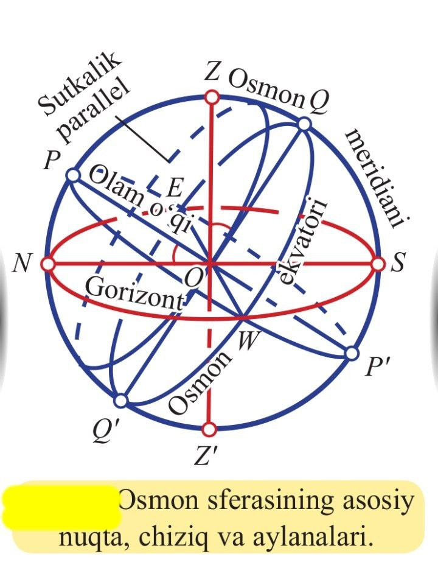

Osmon yoritgichlarining ko‘rinma vaziyatlari va harakatlarini o‘rganish uchun, kuzatish paytida, ularning o‘rinlarini aniqlash zarur bo‘ladi. Buning uchun yoritgichlarning osmondagi vazi yatlarini ma’ lum yo‘nalishlarga nisbatan o‘rganish yetarli bo‘lib, ko‘p hollarda, ulargacha bo‘lgan masofalarni aniqlashga ehtiyoj sezil maydi. Yoritgichlarning ko‘rinma vaziyat lari va harakatlarini o‘rganishdan oldin, osmonning asosiy nuqta, chiziq va aylanalari bilan tanishishga to‘g‘ri keladi. Osmon sferasi deb, radiusi ixtiyoriy qilib olingan va markazi kuzatuvchining ko‘zida yotgan shunday sferaga aytiladiki, bu sferada ma’lum vaqtda yulduzlar osmonda qandayko‘rinsa,shundayligicha proyeksiyalangan bo‘ladi. Osmon sfera sining mar kazida turgan kuzatuvchidan o‘tkazilgan vertikal chiziqning osmon sferasi bilan kesishgan ikki nuqtasidan biri (kuzatuvchining bosh tomoni yo‘nalishidagisi) zenit (Z ), unga diametral qarama-qarshi yotgan ikkinchisi esa nadir (Z ′) deb yuritiladi . Sferaning bu nuqtalarini tutashtiruvchi to‘g‘ri chiziq vertikal chiziq deyiladi. Osmon sferasining uning markazidan vertikal chiziqqa perpendikular qilib o‘tkazilgan tekislik bilan kesishishidan hosil bo‘lgan katta aylanasi matematik gorizont deb yuritiladi. Sferaning vertikal o‘q orqali o‘tuvchi tekisliklar bilan kesishishidan hosil bo‘lgan katta aylanalari esa vertikal aylanalar deb ataladi. Yuqorida eslatilgan nuqta va chiziqlar kuzatuvchining Yer sirtidagi o‘z o‘rnini o‘zgartirishiga bog‘liq ravishda o‘zgarib turadi. Osmon sferasining, Yer sharining asosiy chiziq va nuqtalari bilan bog‘liq bo‘lgan shunday nuqta va chiziqlari mavjudki, ular Yerning istalgan joyidan kuzatilganda ham o‘z holatlarini o‘zgartirmaydi. Olam qutblari, olam o‘qi, osmon ekvatori ana shunday nuqta, chiziq va aylana lardan hisoblanadi. Yer o‘qi davomlarining osmon sferasi bilan kesishgan nuqtalari olam qutblari deyiladi. Yer shimoliy qutbi davomining osmon sferasi bilan kesishgan nuqtasi olamning shimoliy qutbi P, janubiy qutbi davomining sfera bilan kesishgan nuqtasi esa olamning janubiy qutbi P ′ deyiladi. Olam qutblarini tutashtiruvchi o‘qni olam o‘qi deb yuritiladi. Osmon sferasining markazidan o‘tib, olam o‘qiga tik tekislik bilan kesishishidan hosil bo‘lgan katta aylana osmon ekvatori deyiladi. Osmon ekvatori Yer ekvatori bilan bir tekislikda yotadi. Osmon ekvatori tekisligiga parallel tekisliklar bilan sferaning kesishishidan hosil bo‘lgan aylanalar sutkalik parallellar deyiladi. Olam o‘qi orqali o‘tuvchi tekisliklar bilan osmon sferasi kesishishidan hosil bo‘lgan katta aylanalar esa og‘ish aylanalari deb ataladi. Olam qutblari, zenit va nadir nuqtalaridan o‘tuvchi katta aylana osmon meridiani deyiladi. Uning matematik gorizont bilan kesishgan nuqtalari gorizontning Shimol (N, olamning shimoliy qutbiga yaqini) va Janub (S, olamning janubiy qutbiga yaqini) nuqtalari deb ataladi. Osmon ekvatorining matematik gorizont bilan kesishgan nuqtalari Sharq (E) va G‘arb (W) nuqtalari deyiladi. Shimol va Janub nuqtalarini tutashtiruvchi to‘g‘ri chiziq kesmasi tush chizig‘i deb yuritiladi.
